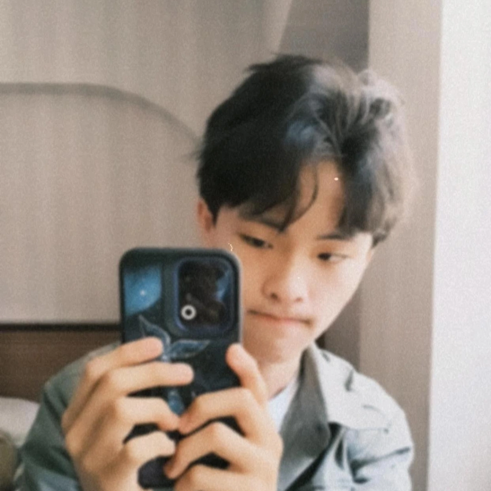
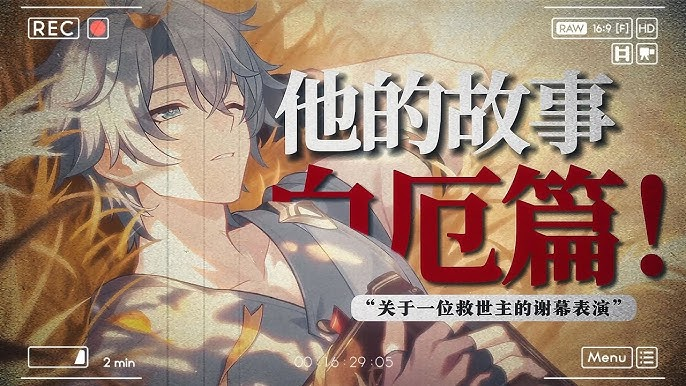
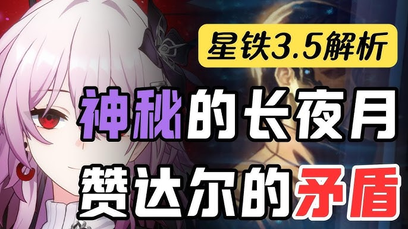
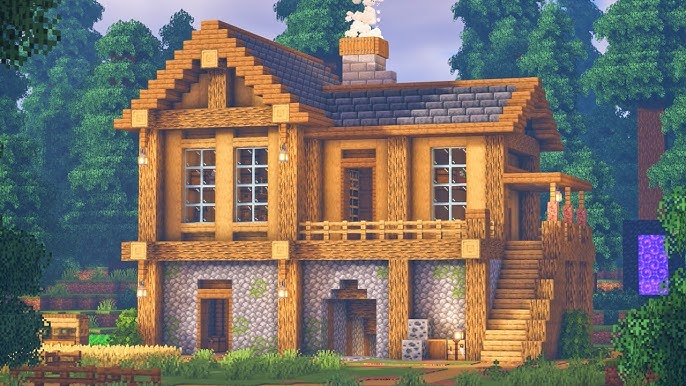
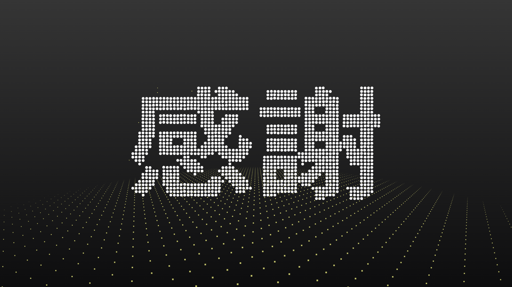
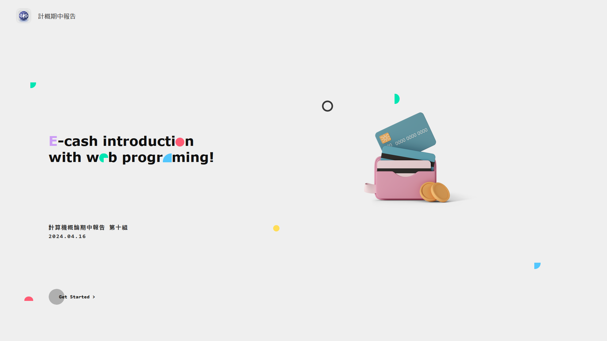
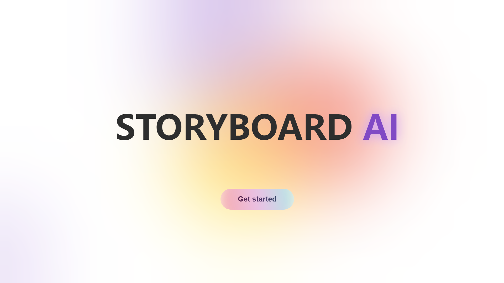

黃晟銘
Richard
網頁程式設計作業 HW01
▉ About me
你好呀~我是黃晟銘，今年20歲，就讀國立暨南國際大學資訊管理學系，興趣是玩遊戲、攝影、跳舞、寫網頁。我從國中開始接出電腦程式應用與程式設計，發現自己可以運用與大家與眾不同的技能。我國中時曾經自學 Unity 與 C++ 語言製作一個屬於自己的小遊戲，高中逐漸在課堂報告中展現出數據分析與圖表美化等能力。高中至大學逐步發掘不同的興趣，發展多元學習。接下來就讓我來逐步介紹我自己吧！

▋ 遊戲與哲思
雖然玩遊戲可能稱不上一個非常好的興趣，但我喜歡在玩遊戲的同時去挖掘遊劇情背後的人文意義，引發哲學的思考。像是最近都主要在玩《原神》與《崩壞．星窮鐵道》，雖然它們都是二次元遊戲，遊戲較多服務於玩家娛樂，但我在遊玩之餘我還會研究遊戲內的背景故事，思考許多哲學議題。還有在一款我也非常喜歡的遊戲－《Minrcraft》它是一個可以自由建造、打怪的遊戲，我喜歡在這個遊戲裡面化身為建築師，建造各式各樣的建築。有一陣子我還發現這個遊戲內部有"指令"，可以透過類似程式碼的不同指令達成不同效果，就好像我在這個遊戲裡製作另一個遊戲一樣，這也讓我深陷其中。當然，也有其他遊戲是以休閒娛樂為主，但因為遊戲不算是本次重點就先介紹到這裡吧～
  
▋ 攝影之路
除了玩遊戲外，我也喜歡攝影，高中時我加入攝影社，從此打開了我的攝影魂！我拍攝了許多各式各樣的作品，目前只放在我的社交平台上。最近還有製作一個作品集網頁，在下方介紹會展示！裡面也有關於我攝影的心路歷程喔！


▋ 舞蹈熱情
接著我還有一個興趣是跳舞！我記得，我從國中就開始接觸韓流文化圈(kpop)，且還自己學習kpop舞蹈，高中時甚至有在敢秀舞台上表演過，大學後加入熱舞社學習了基本的舞蹈基礎，也接觸了街舞，讓我從跳舞小白慢慢進步。同時我也有參加校內的熱舞社表演和耶晚表演。雖然後來因為一些原因退出熱舞社了，但這仍然不能消滅我跳舞的熱誠，我仍然會每年參加耶晚表演，持續跳舞！


▋ 網頁設計旅程
最後最後，我還有一個興趣是寫網頁，你一定很覺得這是一個神奇的興趣，對吧？沒錯！我也這麼覺得，我還記的我第一次接觸網頁是在高三時，那時候考完學測真的有夠無聊，這時有一個老師幫我申請了一筆獎學金，而我想要好好感謝贊助獎學金的好心人就寫了一個簡易的網頁來感謝。為什麼會突然想寫網頁做為感謝呢？其實我也忘記具體的動機了，我只記得，當初的我覺得手寫卡片太普通，想要以我的專長做出一個特別的"感謝卡片"來做為感謝。從此，我便打開了通往網頁設計的大門。
第一次寫網頁，那時候還是半知不解，但我還是努力的把它打造成我心中所想的樣。

網頁連結
有了這次經驗，我也突然想要寫一個網頁給朋友做為生日禮物(涉及朋友隱私，就不放連結了)，我也一邊製作，一邊學習寫網頁的技巧。
❙ 探索與成長
而我一直都沒有以系統式的學習網頁，所以常常東學一點，西學一點，但這也帶來一個好處，我可以投入較多的時間在我喜歡的方面，一點一點的累積網頁設計經驗。大一個計算機概論課程分組報告，我有幸可以報告Web Programing主題，當時我依據心中的樣子做出一個比特幣的介紹網頁。其實我從高中開始就喜歡關注一些UI/UX設計以及動畫，所以我高中時常常在PowerPoint簡報中加入各式各樣的動畫，但在這次各堂報告接觸網頁後，我發現網頁的許多特性讓我可以更加自由的使用這些動畫，雖然在別人眼中可能華而不實，但我卻有滿滿的成就感。以下就是我繼上次生日網頁後，第一次加入大量的動畫，但此時有一個學長告訴我，因為我一次塞了太多元素，所以有時會造成lag，再加上我當時不會寫"響應式網頁"，所以在不同的裝置網頁的排版會跑掉。

網頁連結
大學的某一年寒/暑假，我的朋友邀請我一起幫一個餐廳做一個網頁，這個網頁是一個跑馬燈網頁，在平板上顯示歡迎光臨、桌號、餐廳圖片等等。這個時候的我想出一個達成"響應式網頁"的方法，將跑馬燈網頁主體(marquee.html)放進主網頁(main.html)的iframe元素裡，將iframe跳整為固定大小，同時透過js計算裝置長寬與調整iframe的比例以貼合不同使用者的裝置。同時，這個跑馬燈網頁還需要讀檔、寫檔等功能，這讓一直都在前端打滾的我不得不研究後端，我這時學習的是node.js，因為使用node.js不需要額外使用其他程式語言。而下面看到的網頁是我最近學習的如何將整個node.js專案放到github並投放到網站上的方式，但這個網站需要用移動端裝置瀏覽，否則某些功能會丟失。
網頁連結
關於這次跑馬燈網頁，製作過程中最大的收穫是學會面對需求頻繁變動的挑戰。甲方與我持續加入新功能，使得我必須不斷重構 (Refactoring)程式碼。這段經驗迫使我重新思考程式設計邏輯的彈性和擴展性，讓我的程式架構能力獲得質的飛躍。我深刻感受到，這段從零開始優化重寫的經歷，是促成我後續能完成 Storyboard AI 和 Richard's Space 等專案的關鍵基石，雖然我仍有許多進步空間，但我期待持續成長。
❙ 技術整合與挑戰
大二上的計算機組織課程報告，我們組別選擇「AI與影像 」的主題，有位同學的想法是製作一個AI生成分鏡草圖的網頁，讓使用者輸入故事便可快速生成出一個故事的分鏡草圖，我打算研究將AI嵌入網頁內。我記得我一開始使用的是ChatGPT，但因為種種限制，ChatGPT每天可以生成的圖片有限，這顯然不適合開發時的測試環境，最後我使用了Gemini來生成，並在網頁內逐步調整生成Prompt以調整至最理想的結果。當然！這個網頁我也加入了許多優雅、可愛的動畫，真的十分好玩，歡迎來玩看看，我們為我們的網頁取名為「Storyboard AI」。

網頁連結
計組期末報告後，藉著製作Storyboard AI的衝勁，我還製作了另一個生日快了的網頁送給我大學朋友(一樣涉及朋友隱私，就不放連結了) ，這次我還在網頁內放入類似時光機的動畫來一覽我們之前的合照等，這時的我感受到，相較去年的生日網頁，現在的我在前端的排版、美觀等方面都大幅進步了！
大二下暑假，蛻變後的我想要再次製作一個生日網頁給之前那位朋友。我這次回歸傳統，上次的我製作了一個登入頁面，並在登入時顯示密碼錯誤，需要完成我給的考研才能取回密碼，而這次，我模仿了大部分忘記密碼的流程，讓朋友完成驗證身分的步驟後重設密碼時，跳出駭客入侵的頁面將密碼偷走，隨即進入遊戲，需要通關遊戲才能取回密碼。雖然現在還沒做完，但我敢肯定，這一定是一個非常偉大的作品。這也是我第一次嘗試在網頁上設計遊戲，希望完成的那一日可以分享給大家看看。
▋ 個人作品集：Richard's Space
最後最後，大三上學期，也就是現在，我製作了一個我自己的攝影作品集網頁「Richard's Space」，原本的想法是想要製作我的個人空間，但我覺得個人網頁可能會太過雜亂，攝影作品集比較符合Richard's Space這個名稱。
Richard's Space 以及上方其他的網頁都是我自學的作品，但本次作業我嚴格遵守了作業的基礎 HTML 結構的限制（尚未使用 CSS/JS），將其視為一次練習基礎排版與標籤應用的絕佳機會。我將其他作品連結放置於此，希望能讓老師看到我額外的學習成果。
網頁連結
很高興能選修這堂課，希望能透過系統化學習，將自學的經驗紮實化。